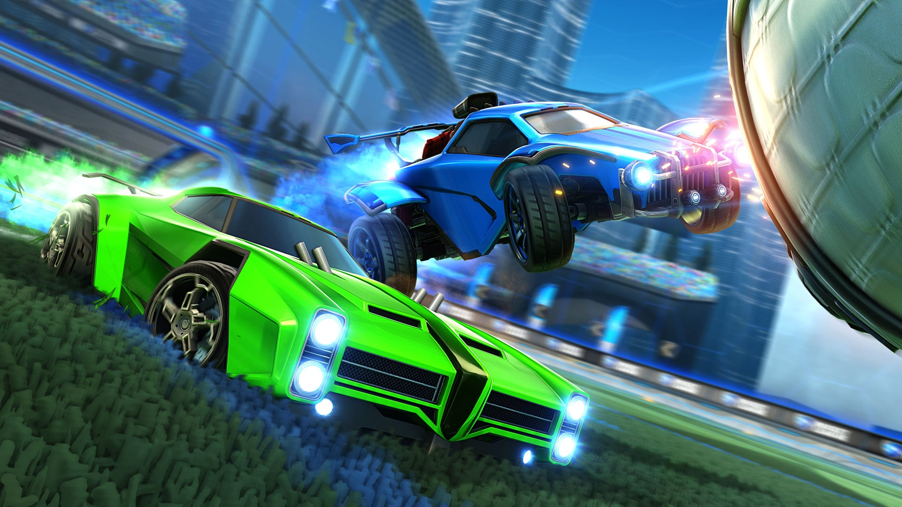

O objetivo é simples: colocar a bola no gol adversário. No entanto, a profundidade do jogo reside na sua física realista, onde cada ângulo de impacto e cada milissegundo de aceleração contam para a vitória.Cada piscada conta, então não deixe com que a pressão te abale!

Rocket League é cross-platform, permitindo jogar com amigos em qualquer sistema.
Controle: recomendado pela maioria dos profissionais pela precisão analógica.
Teclado e Mouse: totalmente viável para jogadores de alto nível(realmente é pedir para se ferrar ao aprender).
A customização é a alma visual do jogo. Você pode modificar:
A customização é a alma visual do jogo. Você pode modificar:
1x1 (Duelo), 2x2 (Duplas — o mais popular) e 3x3 (Padrão).
Rumble: com poderes aleatórios.
Hoops: basquete com carros.
Snow Day: hóquei no gelo com disco.
Dropshot: destruir o chão do adversário para marcar.
O modo competitivo divide os jogadores por habilidade (MMR):
A base do Rocket League é a gestão de Boost. Coletar as cápsulas grandes (100%) ou as pequenas (12%) é vital.
Aqui entramos no "manual técnico" do seu site:
O modo competitivo divide os jogadores por habilidade (MMR):